The Things Below
They are older than the world. They are primordial entities of darkness, chaos, and corruption.
When light first filled the void, they were huddled in the shadows. When matter coalesced, they were there, chewing at its edges. When the First Creators thought "I am me" and named themselves, Those Who Dwelt in Darkness sought their ruin. They whispered lies and stoked egos. They urged the Creators to war amongst themselves. To lay waste to their creations. To let chaos reign.
But the First Creators saw the lies for what they were. They saw the danger posed by the Eldest of Evils. But they saw, too, the utility of such deception.
And so, the Creators laid a trap. They came together to forge the world itself: matter and energy, land and sea and sky, life and death.
They set in motion a system so vast and intricate and wondrous that They Who Whispered could not help but be jealous, could not help but try to destroy it.
When the Terrible Ones moved to destroy the world, the First Creators sprung their trap.
They folded the world around the Things That Knew Only Hate, sealed them away in rock and stone, bound them in the earth itself. The world— this world, what would become our world—became their tether and their prison.
And they, so shackled, became the Things Below.
The Time of Cataclysm
No prison is perfect. With the slow turn of ages, the bindings weakened. The Things Below whispered once again, and those whispers found ears.
The Stone Lords learned firsthand the chaos that those whispers could unleash. They found the cracks in the world-prison and laid great seals upon them. For a time, the whispers were quiet.
But the Green Lords remembered those whispers and what they promised, and called upon the Things Below to crush the traitorous Fae. The Green Lords were ultimately defeated, but the real damage had been done: the bindings were weakened. The whispers of the Things Below had returned, had become a song.
The Stone Lords' own servants heard that song. Sorcerers arose among them, gathered followings, then cults. In secret, they laid their plans and spread their lies. When the time was right, the sorcerers broke the seals and ushered in the Time of Cataclysm.
The Stone Lords' cities sank. Mobs of their servants turned against them. In the north, a dark and terrible howling arose and the Rime Lords sacrificed themselves to stop it. A wave of horrors burrowed up from the Flats, bringing the last of the Tempest Lords low. The Things Below stoked the jealousies and fears of the Forge Lords, turning them against each other.
The time of the Makers was over.
The current age
In the aftermath of the Makers' fall, the would-be sorcerer-kings of the Barrow Builders came to dominate the World's End. For generations, the region—and perhaps the wider world—knew only horror, and suffering, and war.
And yet: the power of the Things Below waned. For centuries now, they have lain mostly quiet in the earth. What brought those dark times to an end? That's for you and your table to decide, but perhaps…
- the gods themselves intervened;
- mortal heroes worked a great binding, empowered by great sacrifice;
- the brave and the desperate rose up across the land, toppling sorcerers and banishing horrors one-by-one;
- the world began to heal itself and renew its bindings;
- the Things Below—sated on destruction and woe—simply tired and withdrew;
- some combination of the above; or
- something else entirely.
Whatever caused the Things Below to fall back, their retreat was incomplete. Some places remain touched by their influence, some creatures stained to the heart.
Objects of power linger, corrupting the unwitting, and some of these—like the sorcerers of old—dance in the dark to a nightmarish tune.
Of late, within the past generation or so, tremors have coursed through different quarters of the World's End. Do prisoners in the depths strain once more against their shackles?
Hooks
- A local unwittingly offers sacrifice to a corrupted spirit, gaining power; the spirit asks for (and offers) more
- A conundrum vexes the PCs; consulting a black menhir might help
- Crinwin have started to worship at a corrupted site becoming corrupted in turn
- An antiquarian is secretly a thrall to a Thing Below, and seeks to unleash a more powerful servant
- A spot in the fields around Stonetop goes bad, festering like an infected boil, corrupted by a discarded artifact
Lore
Everyone knows:
- Evil things are bound deep within the earth
- Sometimes, they send forth demons to wreak havoc upon the world
- Deep water is the most likely place for such horrors to emerge
- Marshedge keeps such horrors at bay by constantly burning bendis root
One might know:
- About the Time of Cataclysm and what came after
- The name, titles, aspects, powers, or minions of a given Thing Below
- How their power corrupts places, artifacts, people, beasts, and spirits
- How to bind, cleanse, or ward off their taint/power/minions
- That unclean things recoil from bendis root smoke, but truly fierce or willful ones can overcome it
- That bronze is bane to the Things Below, and that orichalcum is even more effective
- The difference between corrupted beings and emanations
Very few know:
- Of their true nature
- How they came to be imprisoned
- Any way to truly destroy one
Questions
- What frightening tale from childhood featured the Things Below?
- What little thing do villagers do to ward off their attention or influence?
- When did you first feel their presence? What happened? What still haunts you about that experience to this day?
- What place nearby is said to be tainted by their influence? What sign marks it as such?
- How do the locals speak of them? In hushed tones? In dire sermons? Somewhere in between?
- When was the last time the village dealt with a demon, cult, or sorcerer?
Demons
In truth, there's no such thing as demons. Or rather, "demon" is not a meaningful term. It's often used to refer to emanations of or beings corrupted by the Things Below. But folks might use the term to apply to any number of supernatural terrors. If it's hostile, magical, and has (or can take) a physical form, someone is likely to call it a demon.
Themes
When you introduce a Thing—or more likely, when you introduce a site, artifact, or danger associated with one—choose or roll 2 or more prompts from the theme table here. Combine the results and see where they take you. Alternatively, pick one of the established Things Below, and use its themes.
| 1 | Darkness/cold/despair: the swallowing of light, warmth, and hope (obsidian, hoarfrost) |
|---|---|
| 2 | Denial/shame/secrets/deceit: the rejection of truth, forgiveness, trust (pearls, eyes, masks) |
| 3 | Delusion/delirium/nightmare: the loss of self, the breaking of minds and wills (quicksilver, mirrors, reflections) |
| 4 | Hunger/need/addiction: lack and desperation, the howling want (wind, fangs, meat) |
| 5 | Cruelty/torture/violence/rage: the urge to hurt, kill, and dominate (red crystal, spilled blood) |
| 6 | Destruction/chaos/ruin/ignorance: the tower crumbling; anxiety and loss (fire, ash, dust) |
| 7 | Wounds/injury/pain: the rending of flesh, the breaking of bone (blood, bones, claws, blades) |
| 8 | Corruption/disease/decay: the loss of strength, wholeness, wellness (vermin, poison, acid, filth) |
| 9 | Gluttony/greed/jealousy: the need for more, ever more (mouths, serpents, gems, swarms) |
| 10 | Confinement/suffocation/pressure/ abuse: the crushing weight of helplessness (chains, water, earth) |
| 11 | Mutation/transformation/roiling flesh: the malleability of the body (wax, clay, slime, tentacles) |
| 12 | Death/undeath/loss/grief: the end of all things, the refusal to let go (skulls, tombs, pyres) |
Creating a Thing
As it becomes necessary to flesh out a Thing Below, combine its themes (previous page) with 2 or more aspects to inspire your descriptions of it. Choose or roll an instinct, or invent one of your own.
If a Thing Below becomes an ongoing source of problems for the PCs (and it probably will), then give it a name and one or more grandiose titles. Write it up as a threat (a magical entity).
| 1 | Chitin/shell/carapace/armor |
|---|---|
| 2 | An elder/a crone/a stooped old man |
| 3 | Fire/light/haze/cloud/vortex/void |
| 4 | Horns/wings/tail(s)/hooves |
| 5 | The inanimate, animated/an amalgamation of things |
| 6 | Many-limbed/many-headed/ many-eyed/many-bodied |
| 7 | Moisture/tentacles/slime/ooze |
| 8 | A predator/a warrior/a warlord/ a ruler |
| 9 | Scales/sinew/suppleness |
| 10 | Skulls/bones/corpses/death |
| 11 | Vastness/immensity |
| 12 | A youth/a child/an infant Remember that the Things Below are not bound by constraints of biology, physics, or reality. Make their aspects impossible and weird, things of fever-dream and drugfueled vision. |
| 1 | To stoke conflict, confusion, distrust |
|---|---|
| 2 | To erode hope/faith/honor/ self-image |
| 3 | To hide/bury/smother things or ideas |
| 4 | To deprive others of what they need |
| 5 | To inflict harm, cruelly and unnecessarily |
| 6 | To desecrate/mutilate/ruin things of value |
| 7 | To shock/terrify/horrify others |
| 8 | To wantonly devour and consume |
| 9 | To befoul and corrupt beauty/ strength/dignity |
| 10 | To fight and hurt and kill and rage and hurt some more |
| 11 | To dominate, punish, and crush |
| 12 | To simply destroy, nothing more and nothing less Tweak the instinct you choose to reflect your growing understanding of this particular Thing Below. |
Names & titles
The true names of the Things Below are nigh impossible for humans to comprehend, much less pronounce. What names we have for them are crude approximations. Still, they work well enough to call upon their power.
To name a Thing Below, try one of these:
- Pick an unpleasant word or concept, translate it into a language you and your players don't know ("hunger" >> "Hlad" in Czech)
- Take the name of a supernatural entity from pop culture, literature, or another game; change it a little or a lot ("Dagon" >> "Daagon").
- Combine short, unlikely sounds, often with apostrophes to denote short pauses or inflection ("Hec'tumel")
- Some combination of the above
Then, give each Thing one or more evocative titles, keeping in mind the themes and aspects already established. Look to the lists below for inspiration, altering word forms to suit (i.e., "suppurate" might becomes Suppurating, Suppuration, or Suppurator).
Article/preoposition: the, a, an, who, which, that, of, in, on, through, with, without, o Verb: bargain, bleed, break, bring, burn, burrow, bury, butcher, chew, consume, crawl, crush, dance, deceive, deny, desire, despoil, destroy, eat, end, engulf, feed, fester, flense, freeze, haunt, hide, hoard, howl, hunger, keep, know, lack, laugh, lie, melt, offer, promise, rage, rend, roil, rot, scatter, scurry, seep, shape, shatter, sing, slaughter, sleep, slough, smother, snuff, spoil, starve, steal, strain, suppurate, swallow, swarm, topple, unravel, wallow, want, weave, whisper, wither, etc.
Adjective: all-consuming, awful, black, blackest, broken, crimson, cruel, dark, dead, desperate, eldest, false, forty, endless, first, forgotten, forlorn, gray, great, hidden, hundred, hungry, implacable, inexorable, lost, mad, many, pale, pallid, red, rusty, secret, terrible, thousand, unkind, unliving, vast, wrathful, yellow Role: child, daughter, father, heir, herald, king, lady, last, lord, master, mistress, mother, prince, princess, thief, queen, son, tyrant, etc.
Example names
Use these as a starting point to develop your own Things.
- Ha'z-Ra'iel, Herald of Grief, Thief of a Thousand Hopes
- Na'ieraak, the Liar in Shadows, He Who Freezes the Heart
- Unhlef 'k, the Nightmare that Eats, the Dream with Teeth
- Ta'l Themyin, Burning Child, Cruel Infant, Prince of Rage
- H'nisat, the Suppuration, the Wound that Festers
- Hakog, False Wind and Last Whisper of Deceit
- Lalacheewa, Who Sups on Ash and Sorrow
For We Are Many
The Things Below are legion, varying wildly in power and predilection, activity and ambition. Some are whispered of by peoples far and wide. Others are local terrors, gnawing at a single thread of the world that binds them.
Following are half a dozen Things Below that may or may not exist in your game.
Daagon, Who Waits in Deep Waters
- Send forth minions to do its bidding
- Offer power, wealth, immortality
- Demand a sacrifice
- Twist its servants into wet and wriggling things
Themes gluttony/greed/jealousy, roiling flesh/mutation/transformation Instinct to take from the surface, to never let go
Those foolish enough to brave deep water will tell you: something lurks below. Something patient, something vast, an abyssal mouth opening into a belly that can never be filled. Its countless squirming servants brave the dry and choking land to gather flesh, to gather bone. To steal all wealth and beauty. To take lives full of hope and promise, and feed them to the yawning dark wet jaws.
See also: Blackwater Lake, the secrets of Gordin's Delve, and the Ring of Daagon.
El'rash-Orra, Lord of Orbs, the Many-Eyes
- Spy on someone's actions, desires, shames
- Give knowledge (wanted or not) via dreams/visions
- Twist someone's senses (of reality, of themselves)
Themes denial/shame/secrets/deceit, delusion/delirium/nightmare Instinct to reveal all manner of ugliness
Should you find yourself alone, and yet convinced that you're being watched, it's best not to turn and look. For if you do, you might see a great and disembodied eye. Or worse: a faceless sovereign upon a silver throne, brandishing a silver orb. And should it stand, and let its robes fall open, it will be as the night sky with countless twinkling eyes that see all shames and doubts, all regrets, all guilts and secret fears that have ever been or those that might yet be. Lo! It will show them all to you! Gladly, it will show you! Whether you wish to see or not.
See also: the Staff of the Lidless Orb.
 Hec'tumel, Pale Serpent! Slitherer In Darkness! Death Is Its Eyes!
Hec'tumel, Pale Serpent! Slitherer In Darkness! Death Is Its Eyes!
- Sense powerful longings/emotions
- Offer services, secrets, or power
- Twist a bargain to its favor 'Tis a pale thing, a dead thing, a long reptilian creature with skulls where it should have eyes. It slithers through darksome, bone-strewn caves. Caves that drip with tears and lost hopes. It raised up the first sorcerers, gave them the power they craved. It asked only for little things, harmless things, things they'd never miss. And it delighted, yesss it delighted so, when the gifts it gave brought their recipients low. Brought them low, and everything around them, yesss.
Themes darkness/cold/despair, undeath/ death/loss/grief Instinct to smother life, hope, and light
See also: the Hec'tumel Codex.
Hlad, the Devourer, the Eternal Maw
Instinct to consume reality
- Erode strength, wholeness, life
Themes hunger/need/addiction, destruction/chaos/ruin/ignorance
• Draw in the weak-willed
• Grow in strength and power
The Eternal Maw is a hole in reality, a howling vortex of destruction. To hear its song is to know that all things will end, to wish for the respite of oblivion. To look upon it is to see the void, to know the futility of struggle. To touch it is to feel all strength and courage fail, to face a terrible choice. Will you submit to its implacable hunger? Or will you become one of its infinite mouths?
See also: the Hungering Maw of Hlad.
L'bin'bozia, Flesh-Candle, the Wax Skull, Roiling Tomb
Instinct to horrify and overwhelm
- Torment with nightmares
Themes roiling flesh/mutation/transformation, confinement/suffocation/ pressure/abuse
• Turn someone's flesh against them
• Offer them respite, at a terrible price
In your dreams, it finds you. It grabs you with a host of hands, thick as tastebuds on a terrible tongue. The hands drag you down through water, through soil and stone, to a tomb of black basalt and splintered bone.
They twist your head, unwilling, to look upon your host: a corpse, bubbling and blistering and wreathed in white flame, leering from a chair of squirming limbs, welcoming you to your eternal wretched home.
Y'aaw'kara, the Howling Wind, the Flayer of Flesh
- Sense or amplify hunger/fear/ anger/pain
- Offer the strength of cruelty
- Inflict the Howling Curse on someone
Themes hunger/need/addiction, cruelty/ torture/violence/rage, wounds/ injury/pain Instinct to spread pain and misery
To the people of the far north, Y'aaw'kara's voice is constant as the wind. For he is the angry word. He is the gnawing winter hunger. He is the dream of vengeance upon those who have wronged you, or those who simply have more. Greet him, and you shall see a starving wolf with the body of a starving man, bleeding from a dozen wounds. Listen to him, and you shall hear his wheezing breath, howling like a blizzard gale. Invite him in, and never be prey again.
See also: Barrier Pass, the Whitefang Mountains.
Corrupted sites
These are places where the influence of the Things Below has taken hold, where their power seeps into the world. If the site itself hasn't been established, combine the terrain in which it is located with a feature.
| 1 | Nothing to mark it but the terrain itself |
|---|---|
| 2-3 | A distinctive (un)natural landmark (big tree, natural arch, spring, etc.) |
| 4 | Signs of great destruction (ash fields, crevasse, lava flow, mudslide, etc.) |
| 5 | A beast's lair/burrow/den |
| 6 | A tomb/barrow/memorial, left by the locals or their ancestors |
| 7 | An old dwelling/gathering place of the locals or their ancestors |
| 8 | A ruin of the Makers, or a lingering sign of their presence |
| 9-12 | Deep water, the depths obscure, conceals the site (roll ) Once the site is established, pick or roll its themes to identify the nature of the Thing corrupting the place (or, if you know the Thing is one already established, apply its themes to the site). Pick or roll the cause and severity of the corruption. Populate the place with artifacts and dangers associated with the Things Below, plus discoveries and dangers appropriate to the surrounding area. |
| 1 | Erosion/shifting earth/ the implacable passage of time |
|---|---|
| 2 | A failed attempt to wield primordial power |
| 3-5 | An artifact/a sorcerer's bones/ remains of a corrupted beast/etc., left to fester* |
| 6-8 | An offering of flesh/blood/trauma, intentional or not* |
| 9-10 | A summoning/an invocation/ a misguided invitation* |
| 11-12 | A seal or binding that kept prior corruption in check, now weakened* (roll again for the original corruption) * Decide whether this was intentional, or have someone roll the Die of Fate (1-2: intentional; 3-4 misguided; 5-6 accidental/ incidental). If it was intentional or misguided, who did it and why? If accidental, what happened? |
| 1-3 | A shunned place: full of disquiet and unease, not actively dangerous but where it's easy to draw upon their power |
|---|---|
| 4-6 | A hungry place: full of whispers and visions, calling the unwholesome, trapping and consuming the unwary |
| 7-9 | A poisonous place: full of unnatural phenomena, corrupting those who visit |
| 10-11 | A spawning place: where emanations congeal and manifest |
| 12 | A wound in the world: spreading rot, bleeding horror, getting worse The dangers from a lower level of severity can be found in higher levels, too. A hungry place is full of whispers and visions but perhaps disquiet and unease as well. If a corrupted site will be a source of ongoing trouble, write it up as a threat (a MacGuffin), with an impending doom and grim portents that reflect it getting worse. Look to the list of causes (previous page) for ideas about what could make a corrupted site worse, and what sort of new dangers it might start to manifest. |
Cleansing corrupted sites
The Things Below are loathe to relinquish what power they have in the world, but they can be bested with bravery, cunning, and knowledge. Some PCs (like the Blessed) will have powers or arcana that let them bind or contain the evil in a place. Absent such power, the PCs will need to Make a Plan. Consider such requirements as:
- a tree, especially an elder tree;
- a large piece of stone/crystal/amber/ dark ice;
- a ring of runes, deeply etched;
- a spike/vessel of bronze, orichalcum, or black iron
- a Fae domain;
- a barrow/cairn/vault/urn/vessel, sealed and sanctified;
- a perpetual holy flame;
- the bones of a pure soul, properly carved and prepared;
- some combination of the above; or
- something else entirely.
The PCs are following the river Sruth to its source. I've decided that they'll pass a corrupted site along the river. I've no particulars in mind, so I roll a 6 for feature (tomb/barrow/memorial of the locals or their ancestors). That makes me think of the Barrow Builders.
For themes, I roll 6 (destruction/chaos/ ruin/ignorance with "fire, ash") and 8 (corruption/disease/decay with "vermin, poison, acid, filth"). I roll a 2 for the cause (attempt to wield primordial power), and a 3 for severity (a shunned place).
I discard my first instinct to make it a sorcerer's tomb and decide instead that it's a cairn on a low hill, overlooking the river. Inside lie the remains of a sorcerer-king's child. The sorcerer tried to call them back from beyond the Last Door, but succeeded only in blighting the hillside with fell power. To this day, the stones are hot to the touch, steaming in rain and snow. Nothing grows there, and a swath of sickly, barren soil runs down the hill to the river, where it becomes bubbling, poisonous muck.

Red crystalPulsing, warm, and thirsting for blood, like cruelty solidified. Red crystal is associated with the most violent and hateful of the Things Below. It grows in places they have corrupted, sometimes jutting from the earth in prodigious quantities. Creatures corrupted by the Things Below might have claws or fangs or antlers made of the stuff.
Red crystal has subtle effects, but can be put to many uses. For example:
- Those with power over others find it fascinating; the victimized find it terrifying (plenty of people find it both)
- It causes tempers to flare, stokes resentment, pushes folks to act on impulse
- It absorbs any blood it touches, growing warmer and glowing brighter
- Sorcerers can fashion it into potent talismans, or use it to fuel their magic
- Demon-hunters sometimes use it to lure their prey into traps
Artifacts
Various treasures
- A crude stone figurine of some beast, the claws and fangs exaggerated and seemingly stained with blood (Value 0)
- A pot full of dust◇ (3 uses, fragile, Value 1 to the right person) that causes a racking cough, weakness, maybe even paralysis
- A lantern◇ (5 hours, reach, area, magical, Value 1) made of twisted black metal; its flame casts pale light that leaches color and chills the air
- A chunk of red crystal (previous column), shaped to look like a leering skull (Value 1 to the right person)
- A ◇◇ large tome of supple vellum (best not to ask the source) full of ramblings in an archaic dialect, unsettling images, and arcane diagrams (Value 2)
- A human(ish) skull◇ but with six eye sockets and jutting lower tusks, carved with disturbing patterns and inlaid with silver (Value 3 to the right buyer)
- A twisted elder tree, found with deer licking at its sap and ignoring the approach of threats; the sap can be refined into a highly addictive drug
A Black Menhir
A number of these megaliths have appeared in the Great Wood of late. They are jagged chunks of basalt, tall as a tall lad, etched with intricate patterns that could be writing, almost. The earth around them is broken and disturbed. They are unmarred by moss or lichen, untouched by shoot or vine.
When you study the intricate markings and let your mind wander, you receive a vision or intuition about the current situation.
The GM will describe it. But first, roll +WIS: on a 10+, pick only 1; on a 7-9, pick 2; on a 6-, alas, all 3 are true.
- Part of what you learn is false or misleading (but what?)
- You start to suffer nightmares, of horrors shifting in the earth
- The menhir asks a question about your shame, guilt, or fears—answer truly
A Deep, Dark Shaft
A hole in the ground, maybe 5 feet wide, at least 100 feet deep, ending in a watery chamber or underground lake that contains a Mouth of Daagon.
When you linger near the shaft, answer one of the following:
- Of whom are you most jealous, and why?
- What do you wish to possess, more than anything?
- When did you last feel trapped and helpless?
When you toss something down the shaft, Daagon devours it utterly. When someone falls down the shaft, they are gone, body and soul.
When you feed the Mouth of Daagon someone or something beloved (by anyone, not just you), Daagon gives you a gift.
| 1 | A physical change (scales, rubbery flesh, gills, a tentacle, etc.) |
|---|---|
| 2 | An item of luxury or status (Value 2) |
| 3 | A precious item (Value 3) |
| 4 | A "priceless" item (Value 4) |
| 5 | A way to best your rivals or defeat your enemies |
| 6 | A way to acquire great power or long life Whatever the gift, it arrives soon: while you sleep, in your dreams, or via vision or coincidence or happy accident. |
An Iron Spider
About the size of one's palm, half an inch thick, rusted around the edges, with legs folded up on the back. A hidden button makes the legs extend and reveals their bladed tips. Sometimes, when you go to retrieve it, it's not quite where you left it.
The spider is hungry when you find it.
When you plunge the hungry spider into a person's flesh, they lose HP every few seconds until it's torn free ( damage, messy, ignores armor). Should the spider drain them to 0 HP, it becomes sated.
When you plunge the sated spider into a person's flesh, they take 1 damage (ignores armor) and will not age for years. If they are middle aged or older, they regain some vigor of their youth. Then, the spider becomes hungry.
Each time someone uses the spider to extend their life, their features change subtly, becoming blander, waxier, more pallid, less specific. Should they die after exceeding their mortal lifespan, they become a revenant, hungering for blood.
An Obsidian Pendant
A lump of volcanic glass, impossibly black, set in a pendant and hanging from a leather cord. The glass sucks up light from nearby sources, causing them to dim. (The sun and moon are unaffected, as they are far, far away.) More subtly, the pendant also sucks up kindness, making individuals in its presence more callous and self-centered.
When you wear or carry the pendant openly for a few minutes or more, your eyes adjust and can see clearly in all but pitch darkness. But also, your instinct for the session becomes "Callousness: to disregard the feelings, needs, or wellbeing of others."
A Serpentine Armband
Cast from silver that never seems to tarnish, with what appear to be two small rubies in its eye sockets. It seems like it might not fit—but what do you know, it does.
When you wear the serpentine armband openly for all to see, NPCs find you magnetic, becoming jealous and possessive of your attention. Tempers flare quickly, and you might need to Defy Danger or Persuade others in order to take your leave.
Ask each PC you encounter how the armband affects them.
When you remove the armband after wearing it and basking in the regard of others, you find yourself pining for that feeling of being adored. Roll +CON: on a 10+, you'll get over it; on a 7-9, either put the armband back on (and keep it there) or mark a debility; on a 6-, you cannot sleep until you put the armband on and wear it openly around others.
A Silken Noose
A length of fine cord, tied into a noose with a few feet hanging free. It's remarkably tough, but a bronze blade will slice right through it. If untied and left unattended, it re-ties itself into a noose.
When you slip the noose around someone's neck, it cinches tight—snug and uncomfortable, but the victim can breathe.
When your victim lies or refuses to answer a question, the noose tightens and strangles them until they die or gasp out the truth.
When you (or anyone else) tries to remove or loosen the noose, it starts to strangle the victim. If you (or they) stop, it relaxes. If you (or they) persist, it quickly crushes the victim's windpipe.
When the victim dies, the noose slackens and can be removed.
 Minor Arcana
Minor Arcana
Pick 1 or have someone roll.
| 1 | A strange pendant |
|---|---|
| 2 | A ragged fur cloak |
| 3 | A disturbing mask |
| 4 | A silvery glass bottle |
| 5 | A vellum scroll |
| 6 | A whispering… word? Baleful Utterance |
Major arcana
These are almost certainly associated with the Things Below.
- The Staff of the Lidless Orb
- The Demonhide Cloak
- The Whispering Rocks
- The Blood-quenched Sword
- The Hec'tumel Codex
- The Red Scepter
- The Ring of Daagon
- The Hungering Maw of Hlad
Dangers
 Disquiet and Unease
Disquiet and Unease
Places touched by the Things Below are wrong. Most people and natural beasts shun such places, and spirits of the wild either flee or become tainted themselves.
As you describe the environment or make any of the GM moves below, show off the themes and instinct of the Thing Below behind all this.
- Introduce something ominous (a cold spot, a dramatic gust of wind, mist/fog, a foul stench, etc.)
- Make something seem worse than it is
- Imply that allies might betray them
- Ask about their fears/doubts/shames/ animosities
- Have an NPC get edgy/act weird/ freak out
- Reveal a lack of natural spirits, or only unsavory ones, plus a hateful power that yearns to be called forth
Whispers and Visions
Where the influence of the Things Below is strong, people hear voices, see things that aren't there, experience powerful emotions.
As you describe the environment or make any of the GM moves below, show off the themes and instinct of the Thing Below behind all this.
- Twist their senses
- Lure them deeper/closer
- Keep them from sleeping
- Fill them with growing dread
- Overwhelm them with terror (next page)
- Stir an unsavory emotion (anger, jealousy, despair, hate, resentment, etc.)
- Whisper a suggestion or compulsion
- Show an NPC struggling to keep it together, to keep control
- Have an NPC succumb to the whispers/ their fear/their emotions
When you do as the whispers suggest, mark XP and they can now compel you.
When the whispers compel you, mark XP if you do as they bid. If you resist, roll +WIS:
on a 10+, do as you wish; on a 7-9, choose 1:
- Act as compelled, but divert yourself at the last moment
- Struggle for control until someone/ something snaps you out of it
- Hurt yourself ( damage, ignores armor) and immediately regain control
On a 6-, pick 1:
- Mark a debility, lose HP, and do something drastic to regain control
- Run with it, coming to later having done gods-know-what
Terror
When you are overwhelmed with terror, and do anything other than flee, hide, or cower, pick 1:
- Work yourself up to the task (ask the GM what happens in the meantime)
- Act rashly and recklessly (incurring additional cost or consequence)
- Mark a debility of the GM's choice, and act immediately
Unnatural Phenomena
As the corruption of a site grows stronger, the world starts to twist and unravel. As you describe the environment or make any of the GM moves below, show off the themes and instinct of the Thing Below behind all this.
- Present something impossible and disturbing (bleeding walls, water pooling on the ceiling, darkness that light won't penetrate, etc.)
- Have light sources dim/sputter/snuff out
- Reveal that food has spoiled/drink has fouled
- Inflict a debility (from fear/cold/ennui/ hunger/fatigue/nausea/despair/etc.)
- Eat away at their gear, have it fail for no good reason
- Trap them in a maze of time/space/ perception
- Threaten/hinder/grab/tear at them with the environment
- Corrupt them
Corruption
Instinct to make monstrous
- call on the Things Below for power, intentionally or not
The power of the Things Below can infuse a person, beast, or spirit, corrupting them.
This could happen when they…
• spend time in a corrupted site, one that's poisonous or worse
• attempt to cleanse someone or something of corruption, and things go wrong
• are harmed/infected by an artifact or emanation of the Things Below, by one of those who bear their taint (next page), or by a corrupted being.
Add these to the list of GM moves for afflictions:
• Give them a gift, or increase one's potency
• Inflict a mark upon them, or make one worse
PCs and corruption
If a PC possesses a major arcana associated with the Things Below, then the arcana's mysteries and consequences reflect the PC's growing corruption. Likewise, the Thrall playbook insert (Book I, Thrall) reflects a PC being corrupted by the Things Below. If a PC has one of those arcana or inserts, allow its mechanics to drive their corruption. Don't give them additional gifts or marks unless they are corrupted in some additional way.
Should a PC become corrupted by the Things Below without gaining a major arcana or insert, then ask the player how they want to handle it.
Do they see the corruption as a threat to their character, something to rid themselves of and struggle against? If so, write it up as a threat (threat type:
affliction) and focus on increasingly problematic marks. But if the player wants to explore the power that's now available to them, and the cost of that power, then create a playbook insert for them, using the Thrall insert as inspiration.
Those who bear their taint
- Most deathless ones
- Servants of Daagon, emerging from fog or deep water
- The Fomoraij and their infected servants
- Some of the Green Lords' chimerae: llamudwr, swyn, and zrajedak
- False dead, like barrow wights, the Anan Gllo or nemurvojak
- Fen-trolls, suarachan soothsayers, maybe even fen-walkers
- Bhoka and kyaakara from the Whitefangs and beyond
- Thraulgwyn, the pale demons of the Labyrinth
- The Suileach and other horrors of the Dread River
- Possibly the crinwin, the Crombil, hdour, or the nosgalau
Corrupted Being
To create a corrupted being, start with the original NPC, threat, or monster stats and consider how or why it was corrupted. If the being is a spirit and it normally would have a sacred site, create it as a corrupted site instead.
Identify the themes, aspects, and instinct of the Thing Below responsible for the corruption. Then pick or roll gifts and marks, up to 3 of each.
| 1 | A terrifying presence/aura/gaze |
|---|---|
| 2 | An ability to pass unnoticed (in certain conditions) |
| 3 | Immunity to certain harms (poison, disease, fire, cold, drowning, etc.) |
| 4 | Mind games/false sensations, inflicted on others |
| 5 | Minion(s)/spirit(s)/creature(s), always lurking or called up as needed |
| 6 | Regeneration/rejuvenation/ immortality |
| 7 | Serendipity/luck/hexes/misfortune, bestowed on others |
| 8 | Some power to torment/bind/harm at range |
| 9 | Transformation/mutation/growth |
| 10 | Uncanny insight/inexplicable knowledge |
| 11 | Unnatural resilience (Armor 4 except vs. bronze, +4 HP) |
| 12 | Vicious/terrible/mighty physical attacks |
| 1 | Contagion/pollution/transmission of their corruption |
|---|---|
| 2 | Compulsions (per whispers and visions, Dangers) |
| 3 | Intolerance (to something natural/ pure/sacred) |
| 4 | Nightmares/visions/hallucinations |
| 5 | Physical mutations (scales, reptilian eyes, claws, warped limbs, etc.) |
| 6 | Some sort of taboo (can't cross a line of salt, can't lie, etc.) |
| 7 | Strange appetites/needs/fascinations |
| 8 | Unhealthy/unnatural appearance |
| 9 | Unwholesome presence (puts children/natural beasts on edge) |
| 10 | Unnatural signs (no shadow, no reflection, aura of cold, etc.) |
| 11 | Vulnerability to bronze (its touch burns, its presence distracts) |
| 12 | Wounds that heal slowly (but they regain HP normally) Consider these gifts and marks in light of the Thing and original being. How has their corruption made them both more and less than what they once were? Revise their stats, tags, qualities, and moves to reflect all of the above. Add the corrupted tag. If the being is a spirit, alter its manifestation to reflect the themes and aspects of the Thing that corrupts it. Bronze weapons can always harm a manifest corrupted spirit, and might ignore its armor. How has corruption changed the being's behavior? Are they merely a conduit for their master's instinct? Do they struggle to maintain their own identity? Has their corruption combined with their original personality in an unusual way? Rewrite their instinct to suit. The Seasons Change roll indicates that a threat makes itself known or gets worse. I decide that Iwan, an aggrieved villager, has unwittingly started to dally with a corrupted spirit. I like the idea of an evil glasbren I start by working up the glasbren's tree as a corrupted site. I get 4 for a feature (signs of great destruction), an 11 for the cause (seal/binding weakened and roll again), and a 4 on the reroll (an artifact/remains festering). For severity, I roll a 9 (a poisonous place). I think some evil artifact was bound by an old tree in the glasbren's grove, but a fire swept through and only the glasbren survived. It's deeply scarred and corrupted by the artifact. Looking at the names of Things Below, my eye catches on "Ta'l Themyin (Burning Child, Cruel Infant, Prince of Rage)." I pick themes of "destruction/chaos/ruin/ignorance (fire, ash, dust)" and "cruelty/torture/violence/rage (red crystal, spilled blood)." I pick aspects of "fire/light/haze/cloud/vortex/void" and "a youth/a child/an infant." For instinct, I pick "to inflict harm, cruelly and unnecessarily." I think the artifact buried in the glasbren's grove! I pick gifts of "immunity to certain harms" (fire), "serendipity/luck/hexes/misfortune, bestowed on others," and "vicious/terrible physical attacks" (a fiery grasp). I think it is marked by "strange appetites" (burnt and bloody offerings). Combining these elements with the glasbren's curiosity and penchant for bonding with mortals, I end up with this stat block: Spirits of the Wild sensing Iwan's resentments and "courting" him. Red Scepter is the CORRUPTED GLASBREN |
Solitary, spirit, devious, magical, fiery, beautiful, corrupted
HP 19; ARMOR 1 (lacks organs)
DAMAGE searing grasp (hand, grabby)
SPECIAL QUALITIES tethered to its tree, fireproof INSTINCT to spread cruelty, pain, fire
> Travel freely between fires, burnt trees
> Sense resentment, anger, wrath, and cruelty
> Manifest a beautiful form of cinders and flame (unharmed by stabbing, vulnerable to water and bronze)
> Stoke the flames of conflict
> Offer affection/confidence/power in exchange for "gifts" of fire and blood
 Cinderboar
Cinderboar
HP 14; Armor 4 (resilience), 0 vs. bronze
Damage gore (hand, forceful, messy, 1 piercing)
Special qualities fireproof; hot as banked coals; bleeds oily, choking smoke
Instinct to destroy, especially the most stable people/things
- Snort and giggle
- Start a fire, incidentally
- Gnaw through and eat anything, eventually
- Refuse to die, persist beyond reason
There is a burnt and blasted place, where the Steplands abut Ferrier's Fen. It once boasted a Stone Lord fortress: grand, a tower eternal, lit by a fiery gem. But the servants rebelled. The seals were sundered. Ta'l
Themyin, the Burning Child, shattered the gem and toppled the tower and laughed and laughed and laughed. His rage still boils to the surface, poisoning any beast bold enough to forage in these ruins. His cruelty sends them forth, to uproot and topple, to sunder and burn.

MorgaisHP 19; Armor 1 (lacks organs)
Damage watery tendril (close, reach, grabby)
Special qualities tethered to a skull or trinket, deep in its pond
Instinct to collect drowned souls
- Manifest as a youth or beast, shaped from water (unharmed by cutting or stabbing, unless made of bronze)
- Entrance with beauty, song, or grace (see below)
- Drag them under, revealing their loathsome nature
- Laugh merrily as they drown
The spirits of even shallow ponds can be callous and uncaring. How much worse, then, are the spirits of those deeper pools that have claimed the lives of mortals?
For—willing or not—they have made offering to Daagon, and let it in to their watery hearts.
When you listen to the morgais' song or let your gaze linger on its graceful form, your heart fills with longing. If you go to it willingly, mark XP. If you wish to turn away, roll +WIS: on a 10+, you see the ugliness beneath and can think clearly; on a 7-9, you shake yourself free but the longing remains—mark miserable or dazed (your choice); on a 6-, you approach before you realize what you're doing.
 Cultist
Cultist
HP 6; Armor 0 (or by worn armor)
Damage (tags by weapon)
Special qualities marked by the Things Below
Instinct to belong, to feel important
- Use one of their gifts
- Make a sacrifice for the cause
- Have second thoughts, maybe?
Folks are capable of all sorts of dark things, if someone else suggests they do them. Especially if they're desperate. Especially if the person leading them is someone they trust, or respect, or admire. And if that first little dark deed comes without any consequences, or any consequences to them? Well, then the next dark deed might not be so little, hmm?
 Sorcerer
Sorcerer
HP 14; Armor 0 (or by worn armor)
Damage iron blade (hand)
Special qualities marked by the Things Below
Instinct to aggrandize themselves
- Use one of their gifts
- Amass power through study/ sacrifice/rites
- Unleash their power
- Reveal a plan or preparation
- Some seek out corruption, embrace it.
They might not have chosen the path, but at some point they chose to keep walking, believing the power on offer was worth the cost. Some think they are in control. And perhaps they are—for now.
Sorcerers are often in possession of one or more arcana, which they do not hesitate to use. They may or may not be followed by cultists (see above).
Thrall
HP 16; Armor 0 (or by worn armor)
Damage (tags by weapon)
Special qualities marked by their master
Instinct to explore their condition or to hide their condition or to serve their master's whims
- Use one of their gifts
- Struggle against their master's impulses
- Act on their master's impulses
- Recover from terrible, even mortal injury
When the Last Door stands open before you, what will you do? Some step through bravely, with a nod to the Lady of Crows. Others stagger through, weeping and wailing. Others—consumed by longing, vengeance, or duty—spit on fate, turn their back on the Last Door, and cling to this world for a time.
But what if… you simply want to live?
What if, when faced with oblivion, you called upon one of the Things Below and offered yourself up to them?
What if they said yes?
Wretch
HP 7; Armor 4 (resilience), 0 vs. bronze
Damage malformed appendages (hand, close, grabby)
Special qualities horribly misshapen, bound to their prison, burnt by bronze (+ damage)
Instinct to make the pain stop
- Moan, whisper, wail
- Reveal themselves, terribly
- Heal wounds, regrow limbs, get back up
The victims of L'bin'bozia (Flesh-Candle, the Wax Skull, Roiling Tomb) find themselves turned into… things. Furniture.
Decoration. Masses of flesh where it's hard to see where one poor soul ends and the other begins. They do not die of old age.
They cannot starve. They must endure, trapped in the cave or the mire or the tomb, or wherever they met their fate. They must persist, in pain, begging for some outsider to come and end their suffering.
 Emanation
Emanation
The Things Below are well and truly trapped—bound within the earth, to the earth. Even during the Time of Cataclysm, they did not walk free. They are tethered as long as the world remains.
But there are cracks in the world. Places where their influence bubbles up. Deep water is the surest of these, which is why it is often filled with horrors. But any place can bear their taint.
The power of the Things Below usually just corrupts what's already there. But sometimes, it coalesces. It creates something new, something terrible. A spirit or being with a will and purpose of its own.
Scholars call these "emanations." They are not truly part of a Thing Below. They are...
discharge. Leavings. Spawn.
To create an emanation, identify the Thing Below it spawned from, including its themes, aspects, and instinct. Identify, too, the corrupted site it inhabits. Pick or roll for its origin.
| 1-2 | Arose in the aftermath of great devastation/atrocity |
|---|---|
| 3-4 | Burst forth from a corrupted being that absorbed too much power |
| 5-6 | Called forth, via a terrible ritual |
| 7-8 | Given shape by worship/adoration/ feeding |
| 9-10 | Let into the world by accident/ hubris, a failed attempt to bind/ cleanse/wield the power of the Things Below |
| 11-12 | Spawned spontaneously from a truly corrupted site Imagine the emanation that forms as a result. It will share at least some of the themes and aspects of the Thing from which it spawned, and might share its instinct. An emanation has its own memory, arguably its own personality. It might communicate with its progenitor, or do its bidding, but an emanation is its own thing. |
Hand of Daagon
HP 23; Armor 4 (resilience), 0 vs. bronze
Damage many hands (hand, close, grabby, ignores armor)
Special qualities blind; tremorsense; reaches through matter like it was water
Instinct to feed the Mouth
- Sink into the stone, or emerge from it
- Provoke abject revulsion
- Reach through armor, clothing, flesh, bone to take what is most valued
- Retreat with its prize, back to the water
In a deep deep cave, where light has never shined, there is a lake. In that lake, there is a Mouth of Daagon: ever-hungry, evergreedy, consuming all that it is offered.
And in the caverns around that lake? There you will find the Hand: ever-groping, ever-grasping, dragging all it finds of value back to the Mouth.
Voice of the Eternal Maw
HP 19; Armor 4 (resilience), 0 vs. bronze
Damage scream (near, area, reload, ignores armor) or unnaturally large and toothy maw (hand, messy, 3 piercing)
Special qualities tethered to the vortex, unable to leave the mountain
Instinct to create more mouths, more wraiths
- Compel someone with whispers, even from afar
- Possess a traveler, especially one who is hungry, weary, or tired
- Drive its host to feast
- Leave its host corrupted, withering, doomed to become a wraith
Hidden in the southern arm of the Huffel Peaks, there is a gorge that splits a mountain. The gorge is cloaked in constantly churning mist, cold and clammy. At the base of the gorge is a thin split in reality, a vortex, a manifestation of Hlad the Devourer, sucking in everything it touches.
The mountain and the gorge are shunned now. The Hillfolk and the Ustrina who live nearby know better than to approach. But the Barrow Builders fed the vortex. They brought it gifts, and offerings, and living, screaming sacrifice. In time, these offerings gave the vortex a Voice. And the Voice roams the mountain still.